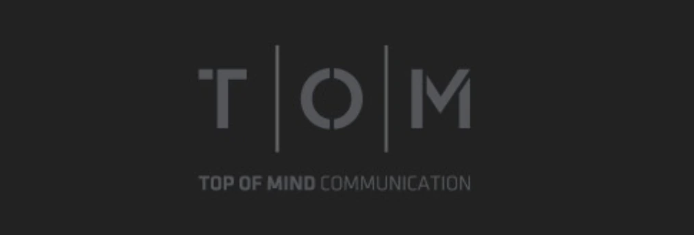

2024 — PRESENT / TOM
Head of Coordination & Quality
Promoted in 2025. I lead 15+ concurrent projects with teams of up to 25 specialists across software, creative production and digital learning. I align scope, client decisions, quality and delivery, supporting 10+ client relationships as initial leads become continuing projects and business operations.
